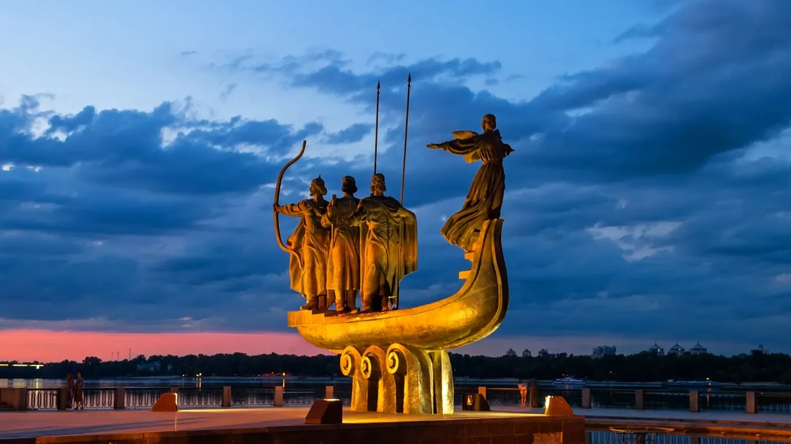
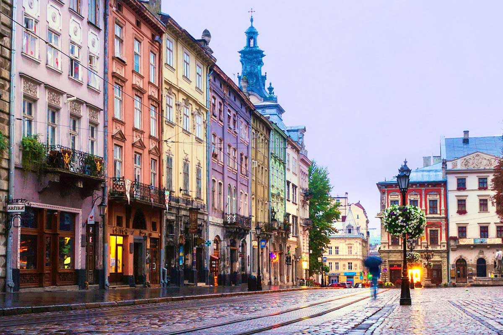
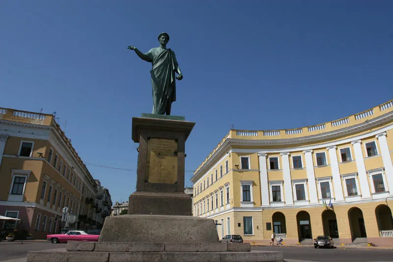
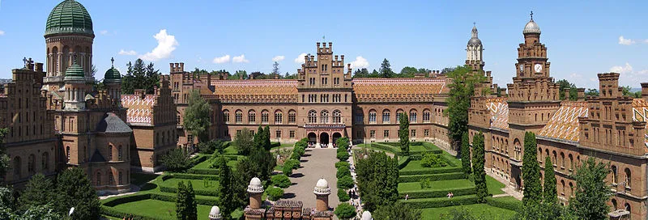
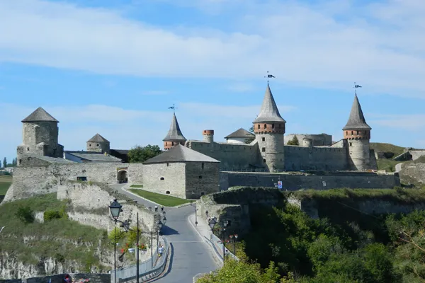
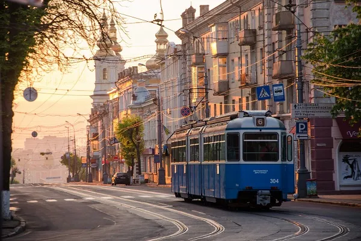
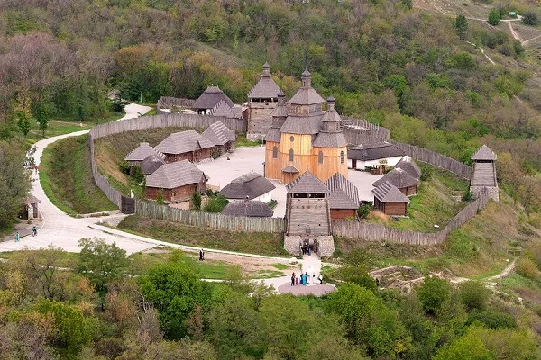
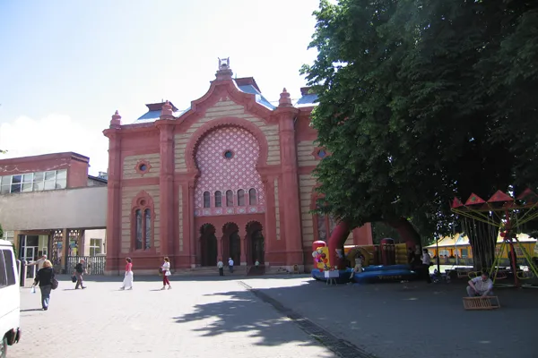

Історія
Україна має багатовікову історію, що бере початок від Київської Русі...
У різні історичні періоди українські землі входили до складу різних держав. У 1991 році Україна проголосила незалежність.
Сьогодні Україна є суверенною державою з багатою культурною спадщиною.
Географія
Україна розташована в Східній Європі та є найбільшою країною Європи за площею.
Територія країни включає рівнини, Карпати, річки Дніпро та Дністер.
Клімат помірно-континентальний.
Культура
Українська культура відома народними піснями, вишиванками та традиціями.
Свята, народні танці та кухня є важливою частиною національної ідентичності.
Україна має багату літературну та музичну спадщину.
Міста України







